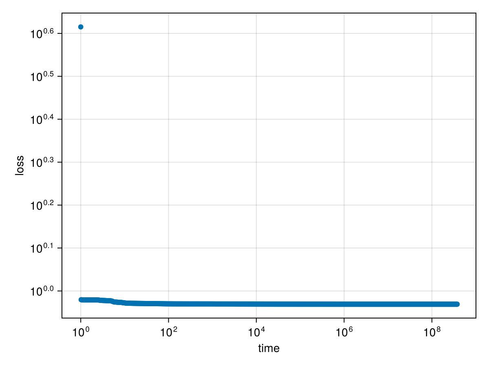

In the following example, we train a network with one hidden layer of 5 softplus neurons on random in- and output.
using MLPGradientFlow, Random
Random.seed!(123)
input = randn(2, 1_000) # 2-dimensional random input
target = randn(1, 1_000) # 1-dimensional random output
net = Net(; layers = ((5, softplus, true), # 5 relu neurons with biases
(1, identity, true)), # 1 identity neuron with bias
input,
target)
p = random_params(net)
result = train(net, p, maxtime_ode = 20., maxtime_optim = 20., n_samples_trajectory = 10^3)Dict{String, Any} with 20 entries:
"gnorm" => 8.13918e-6
"init" => Dict("w1"=>[0.149272 -0.196412 0.0; -0.329254 0.715402…
"x" => Dict("w1"=>[252.78 637.618 -568.47; -860.809 845.086 -…
"optim_stopped_by" => "maxtime"
"loss_curve" => [4.12157, 0.954064, 0.953852, 0.953698, 0.953575, 0.95…
"target" => [0.911875 -0.792403 … -0.313917 -1.1881]
"optim_iterations" => 35448
"ode_stopped_by" => "maxtime_ode > 20.0s"
"ode_iterations" => 16746
"optim_time_run" => 20.0003
"converged" => false
"ode_time_run" => 20.0174
"loss" => 0.931382
"input" => [0.808288 -1.10464 … 0.723346 -0.0100866; -1.12207 -0.…
"trajectory" => OrderedDict(0.0=>Dict("w1"=>[0.149272 -0.196412 0.0; -…
"ode_x" => Dict("w1"=>[245.833 620.202 -552.947; -840.819 825.482…
"total_time" => 58.6772
"ode_loss" => 0.931382
"layerspec" => ((5, "softplus", true), (1, "identity", true))
"gnorm_regularized" => 8.13918e-6We see that optimization has found a point with a very small gradient:
gradient(net, params(result["x"]))ComponentVector{Float64}(w1 = [-5.719954098891878e-10 -5.323112326117797e-10 -7.146742107212354e-11; 3.7588422110245895e-12 -9.510241027790014e-13 1.661969890071112e-9; … ; 7.689408109833248e-6 8.427168475369661e-7 -2.8010728362346526e-6; -3.838208691507027e-6 -4.2804812189298055e-7 1.3883505061471624e-6], w2 = [8.139179475807106e-6 3.0258424480430036e-6 … 7.284416177299825e-9 1.3578677390047034e-8])Let us inspect the spectrum of the hessian:
hessian_spectrum(net, params(result["x"]))LinearAlgebra.Eigen{Float64, Float64, Matrix{Float64}, Vector{Float64}}
values:
21-element Vector{Float64}:
-2.9452021591627235e-11
1.4992878136410263e-12
1.6575305321110985e-12
4.7641937194514607e-11
6.401938030929902e-8
1.6362179672791598e-7
2.54740960810049e-7
2.344882376272371e-6
0.0004176693692783237
0.00263174706001763
⋮
0.4974181228147106
5.123047157721044
18.86740837428054
37.97006442276968
41781.829516167854
65399.17382858494
97826.8551017946
619169.3827942186
1.9120479961584238e6
vectors:
21×21 Matrix{Float64}:
-0.00269035 0.0309664 -0.28365 … 4.41364e-8 1.12873e-8
0.00905268 -0.465 -0.0505963 -4.71147e-7 -3.31102e-7
-3.82636e-6 -3.24802e-7 -2.0014e-6 0.0552911 0.346053
2.58204e-5 1.01433e-7 -3.01587e-6 -0.102596 -0.68547
-2.15009e-5 -7.65321e-7 -2.3175e-6 0.0472772 0.339923
-0.00677636 0.0773861 -0.711148 … -1.16341e-7 -1.97441e-8
-0.00887446 0.45599 0.0497727 3.67597e-7 1.18095e-7
2.92355e-6 -1.1199e-7 -1.00219e-6 -0.382552 0.0491409
-1.5954e-5 -3.6967e-7 -3.43055e-7 0.760232 -0.100722
1.28457e-5 1.66134e-7 -7.82849e-7 -0.378192 0.0516923
⋮ ⋱ ⋮
-6.00782e-7 -5.82271e-7 -2.33308e-6 0.0321811 -0.207453
1.26631e-6 -5.41721e-7 -2.38172e-6 -0.0712826 0.410757
9.68716e-8 -5.41174e-7 -2.3109e-6 0.0391869 -0.203568
5.07961e-9 -5.83059e-8 5.33783e-7 … -0.0530671 -0.00718575
-9.75694e-9 5.04709e-7 5.47885e-8 -0.326168 -0.162315
-0.323917 -0.00295809 0.0180261 2.33522e-5 -0.00071627
-0.486945 -0.0130195 -0.0101322 4.32902e-5 -0.000697072
0.810862 0.0159774 -0.00790072 6.25659e-5 -0.000676016
0.0 0.0 5.22418e-7 … 0.000102542 -0.000507262The eigenvalues are all positive, indicating that we are in a local minimum.
using CairoMakie
function plot_losscurve(result; kwargs...)
f = Figure()
ax = Axis(f[1, 1], yscale = log10, xscale = log10, ylabel = "loss", xlabel = "time", kwargs...)
scatter!(ax, collect(keys(result["trajectory"])) .+ 1, result["loss_curve"])
f
end
plot_losscurve(result)